A Painless Introduction to Python Data Analysis and Visualization
Data visualization and data science is a hot topic right now, and there’s lots of people I know who want to develop this skill set. A common hurdle, in my experience, is that a lot of tutorials are either incredibly specific (here’s how to change the y-axis title) or very abstract (this is what a violin plot is, good luck making one!) The goal of this tutorial is to make the kind of resource I would have really benefited from when I was starting out: an introduction that can give you the background you need to actually benefit from internal documentation and give you an idea of what’s possible so you aren’t reinventing the wheel (an extraordinarily common problem). This post is written for:
- People who aren’t completely new to computer programming, but not necessarily programmers or software developers
- You need to know basic Python syntax to follow along, but you don’t need to actually know much about Python
- Anyone who is tired of the limitations of programs like Tableau and wants to be able to make bespoke visualizations that meet their specific needs
- Those who are interested in using Python for statistics or machine learning who want some wider background before they start
- Students or presenters of any kind who want to make beautiful graphs without fighting Excel for an hour
If any of these describe you, you’ve come to the right place!
Structure
We’re going to be using data from the World Bank: specifically, data with birth rates by year for each country. The data I’m using is here. Our goal will be to learn something interesting from this data that we couldn’t have easily learned without the tools we’ll be using. This is pretty broad: I don’t want to make this tutorial about data analysis for anything in particular, so we’re going to assume that we have absolutely no idea what the data might have to say.
Here’s what we’re going to do:
- This data is a bit messy, as many datasets are: our first goal will be to get it into Python and clean it up.
- There’s some missing data, which most real-world datasets have: we’re going to have to learn how to handle that quickly and efficiently.
- The tools we’re going to use have incredibly useful ways of reshaping data and getting it into the format we need. We’ll learn how to transform the data so it’s exactly how we want it.
- After that, we’ll start visualizing the data and take a whirlwind tour of the ways in which we can quickly get a feel for it.
- I have a particular question I’m going to ask to narrow our inquiry. In answering that, we’ll explore some other plots, and narrow down an interesting question.
- Finally, we’ll close by making a graph that lets us give a satisfying answer to our problem using visualization, letting us quickly and effortlessly make sense out of an enormous amount of raw information.
In short: we’ll get the data, clean it up, get our bearings, find an interesting question, and find an interesting answer.
Sound good? Let’s do this!
Tools of the Trade
Jupyter notebooks, despite the suggestive spelling, are not only for Python nowadays: R and other scientific languages are now compatible with Jupyter.
Projects like the posts on this blog—multimedia, interdisciplinary documents that blend text, visuals, and code—are pretty common nowadays, and there’s a great tool for dealing with this particular mix of information: Jupyter notebooks. Jupyter notebooks are similar to notebooks in software like Mathematica or MATLAB: they are a collection of cells, where each cell is text or code (usually Python) and you can view them together.
I mention this because this post has a companion Jupyter notebook! Even if you don’t have Python and company installed on your computer, you still have a chance to play around with what I’m doing and follow along at https://notebooks.azure.com/pollards-rho/projects/a-painless-tutorial. You’ll learn a lot more if you answer your own questions as you go (“Can I do this?” “What if I change that?”), and it can be a great way to use Python without the installation process: it runs conveniently in your browser!
The notebook mostly mirrors what’s written here, but there’s some changes made in the code on this blog because the limits of what is readable and fits on the website are smaller than what can fit in Jupyter. (Just don’t be worried if you get slightly different results between versions.)
Getting Started
First things first: we need to import the libraries we’ll be using to work with the data. There are
four we’re using: numpy, pandas, matplotlib, and seaborn. This can more or less be copy-pasted at
the start of every notebook you use:
import numpy as np
import pandas as pd
import seaborn as sns
import matplotlib.pyplot as plt
A quick primer as to what each of these are:
-
numpyis a library that works with lists of numbers and numerical programming, and it’s essential to what we’re doing:pandasbuilds off of it in many ways. It also uses C code for a lot of things, so it tends to be much faster than native Python. -
pandasis basically Python’s version of Excel: it works with tabulated data very effectively. -
matplotlibis a low-level plotting library that allows you to make all sorts of plots and customize them precisely. We won’t actually be using it much, but it powersseaborn, which we will be using a lot. -
seabornis a library that usesmatplotlib, but in a higher-level way. It’s generally oriented towards scientific visualization, which is exactly what we’re doing today: trying to quickly make inferences and learn about information.
Note that the Jupyter notebook has some styling code after this part so that the visuals we make match the “house style” I have for this blog. They aren’t really the point of what we’re doing, so I’m skipping them here. The notebook goes over that in more detail if you’re interested.
Now we need to read in our data. pandas can read in an enormous variety of data formats, but I’m
just going to use a CSV file. Usually, you’d give it a file on your computer. However, a
little-known feature of pandas (at least, little-known among the people I’ve shared this with) is
that it can also take in URLs! That’s what we’ll do here:
# I'm using a shortened URL for visual reasons
data = pd.read_csv("https://git.io/Jeuhu")
This reads in the data into a DataFrame, which is basically a super fancy table.
I’m pretty paranoid, so I like to check if this actually worked. The easiest way to just get a look
at the beginning of the data. You can do this with the head command:
data.head()
This outputs text which Jupyter notebooks convert into more aesthetically pleasing HTML tables. I’ll be redoing that here in the blog’s style so you can see it here, but just know that it’ll look different when you do it.
| Country Name | Country Code | 1960 [YR1960] | |
|---|---|---|---|
| 0 | Afghanistan | AFG | 7.45 |
| 1 | Albania | ALB | 6.489 |
| 2 | Algeria | DZA | 7.524 |
| 3 | American Samoa | ASM | .. |
| 4 | Andorra | AND | .. |
This really goes for anything I’m doing: if you’re curious, look it up! There’s excellent documentation on almost all of this stuff. Inside Jupyter notebooks, press Shift+Tab inside a function call to bring up its documentation inline: this is super handy.
OK, we got our data in! It took one line of code, which isn’t that bad considering how many options we have: consult the documentation to learn exactly how much you can mess with how it reads information in.
What Are We Looking At?
OK, so what is a DataFrame? Let’s look at this sneak preview of data and talk about the general structure.
Specifically, indexes have to be hashable: they can’t be objects that can be mutated, like lists. In practice this is not a big issue.
DataFrames always have an index: a big list of data, one for each row, such that no two rows have the same index. Indexes can be basically anything, and the default choice is usually just the natural numbers, like we have here.
DataFrames also have some number of columns: named lists of data with a value for each row. We have three columns here. We can get a specific column and it’ll return a 1D list (called a series) for us:
# just getting the first 5
data.head()['Country Name']
This is what a Series looks like if you print it out, and so its what the above code returns:
0 Afghanistan
1 Albania
2 Algeria
3 American Samoa
4 Andorra
Name: Country Name, dtype: object
Series keep the name and the index. Also note this dtype field. What’s its deal?
Those well-versed in Python will know that this isn’t technically true: it’s closer to “numpy will
actively throw an error if there’s a mismatch and vanilla Python won’t”, but it doesn’t really have
much bearing on what we’re doing today.
In numpy and by extension pandas, unlike “vanilla” Python, there’s static typing: internally, all of
your data has some type. object is the most general type, which is used for things like text. Other
types include integers, decimals, dates, and lists themselves.
Tidying Up
There are some columns that we don’t really need, and a lot of the names are a bit long-winded. I also want the column names that are years to be typed as numbers so we can do things like compare them. We’ll achieve all of that with the following piece of code:
data.drop(
columns=["Country Code", "Series Name", "Series Code"],
inplace=True
)
def trim_years(col):
if col.endswith(']'):
return int(col.split(' ')[0])
else:
return col
data.rename(columns=trim_years, inplace=True)
data.rename(columns={'Country Name': 'country'}, inplace=True)
(I promise that trim_years function is the most pure Python you’ll get in this post!)
Let’s go through this in pieces. .drop() is a method that takes in columns or rows (if you pass
index=[1, 2, 3], it’ll delete those rows) and drops them from the DataFrame, usually returning a new
DataFrame. We want to modify an existing one, so we set inplace=True.
.rename() works very similarly to drop in terms of the parameters it takes, but the only difference
is that now the argument we pass in can either be a dictionary mapping old names to new names or a
function that changes names. (We use a function because we want to remove the annoying [YR1960] bit
at the end of 50 names, which would be a lot of typing otherwise!)
Having all-lowercase names is highly recommended to avoid carpal tunnel: you can always change your axis labels later, but you can’t fix your fingers with a function call. Stick with something easy to type.
We can get the list of columns in our DataFrame and see what that code did like so:
# only get the first 10
data.columns[:5]
This outputs the following:
Index(['country', 1960, 1961, 1962, 1963], dtype='object')
.. Problems
Let me reprint some of the data:
data.head()[data.columns()[:5]]
As you can see, we don’t have to index with a single column: we can use a list of columns and we’ll get a table back. This is what this code outputs:
| country | 1960 | 1961 | 1962 | 1963 | |
|---|---|---|---|---|---|
| 0 | Afghanistan | 7.45 | 7.45 | 7.45 | 7.45 |
| 1 | Albania | 6.489 | 6.401 | 6.282 | 6.133 |
| 2 | Algeria | 7.524 | 7.573 | 7.614 | 7.646 |
| 3 | American Samoa | .. | .. | .. | .. |
| 4 | Andorra | .. | .. | .. | .. |
As you can see, we have an issue—obviously the list of countries has changed a lot since 1960 and
data collection has never been perfect, and so a lot of countries who have rows in this dataset
don’t have a full set of years. The World Bank has just inserted .. where this happens.
pandas has lots of tools for dealing with null data. In order to use them, we have to make our data
actually null, not this weird ".." string. To fix that, we’ll use the applymap method, which applies
some function to every piece of data in the dataframe:
data = data.applymap(lambda x: x if x != '..' else np.nan)
Now our data has real null values, so we can use the tools pandas has for working with this
particular problem. Specifically, we can use pd.isnull() to make a different DataFrame where each
piece of data is True if that piece of data was null and false otherwise.
Internally, this type of Boolean data is represented as 0 for False and 1 for True. This means we
can sum the individual rows to figure out which countries are problematic:
pd.isnull(data).sum(axis=1).head()
0 1
1 1
2 1
3 59
4 54
dtype: int64
(axis=1 means “sum across the rows”, and axis=0 would sum across the columns. With no arguments, it
sums by both, and returns a single thing.)
There’s one big exception: Boolean algebra operations like and and not. To do those, you use the
Python operations that are normally used for the bitwise version of these operations. & is and, ~ is
not, and | is or. However, because these have different order-of-operations rules than you’re used
to with standard Python and, not, etc., you’ll need parentheses in most cases: it’s
(data > 2) | (data < 1), not
data > 2 | data < 1, because the second will try to compute 2 | data.
One very cool thing about numpy and pandas is that many operations can be done elementwise by just
operating on the series itself. For example, we can do an elementwise comparison:
pd.isnull(data).sum(axis=1).head() == 1
0 True
1 True
2 True
3 False
4 False
dtype: bool
This isn’t just for comparisons: we can do all sorts of math elementwise (we could have multiplied
every count by 2, for example.)
We can see if we look at more rows that every row has 1 null value. That means that one of the
columns probably has an issue. Before I explain how to deal with that, we’re going to take a quick
detour to look at one of the most important parts of understanding pandas: sophisticated indexing.
Indexing Like a Boss
I may be speaking from experience about not just fiddling with things until it works. Maybe.
Understanding how indexing really works, as opposed to just fiddling with things until it works, is
the key to effectively using pandas, and a lot of people I’ve worked with were much less effective
users of this software than they could be because they didn’t understand how these systems really
worked. We’re going to fix that right now.
Vanilla Python sequences, like [1, 2, 3] or "hello", can be indexed using slice notation. You can
use up to three arguments, separated by : and in square brackets, to do this. Like in pandas,
everything is 0-indexed: 0 is the first element.
Let’s start with the simplest case: a single number. If l is our list, then l[2] returns the third
element of the list (remember it’s 0-indexed!) We can add colons on either side of this number to
change how it slices: effectively, the colon means “keep going until you hit the end of the list.”
For example, l[2:] is “every element from the third one to the end as a new list”, and l[:2] is
“every element up to but not including the third one.” This is a common sticking point: slices work
like range or other Python functions in that it’s inclusive on the left side and exclusive on the
right: you don’t include the last element. A good way to keep this in mind is that l[:2] returns 2 elements.
We can add a second number to get a range that doesn’t stop or start at the ends of the list. l[1:3]
means “start at the second element and keep going until before you hit the fourth element.” This
will have two elements: you can just subtract the end index from the start index to see how long a
slice is.
You can even use negative steps: l[::-1] is the reverse of the original list, and l[-2:1:-1] means
“start from the element second to the back, count backwards by 1s until you hit before the second
element, and return that as a list.”
There are two ways you can extend this slightly that aren’t as often used but are still good to
know. Negative numbers essentially “wrap” and start counting from the back of the list. l[-1] is the
last element, whatever number that is. l[:-1] is “everything but the last element.” The other
extension is a second colon and a step, that takes every nth element. So, for example, l[1:5:2]
means “start at the second element, and take every other element in the list until before you hit
the sixth element.”
This is a lot to take in at once: let’s show some examples which should clear things up.
"python"[1]
# returns 'y'
[4, 15, 2][-1]
# returns 2
[4, 15, 2][-1:]
# returns [2]
"python"[1:4:2]
# returns "yh"
"hello"[1:4]
# returns "ell"
"hello"[1:4:1]
# same as above
[1, 2, 3][4:]
# returns []
[1, 2, 3][:2]
# returns [1, 2]
[1, 2, 3][-2:]
# returns [2, 3]
OK, so now how does this work with pandas?
We already know we can index based on columns if we have a DataFrame, like data['country']. We also
know we can index a Series, so data['country'][2] gives us the country value for the row with
index 2.
Both of these can be replaced by a list or other sequence. We can do data[['country', 1960']] to get two
columns from a DataFrame, and we can do data['country'][[0, 1, 4, 6]] to get those specific rows from a
DataFrame. We can also use : to get slices, so we could do data['country'][4:19] to get rows 4
through 18.
This is very important: we are indexing based on the values in the index, not based on the number of
the row. 4 returns the 5th row in the list, because that row has index 4. If the row with index 4
was the hundredth row, it would still return that row. This means things like data['country'][-1]
will return an error: -1 isn’t in our index.
It’s very common that our index is the natural numbers, so this distinction is easy to forget. We’ll see that it matters a lot, however, and so always make sure to keep it in mind.
2D structures like DataFrames can be indexed in both ways at once if we want to select some rows and
some columns. We do this by using the .loc member of data, indexing using the rows we want, a comma,
and then the columns we want:
data.loc[[4, 8, 2], ['country', 1960]]
| country | 1960 | |
|---|---|---|
| 4 | Andorra | NaN |
| 8 | Armenia | 4.786 |
| 2 | Algeria | 7.524 |
Some things to note:
- The output is ordered by how we index: note how the rows are out of order.
- The index is kept. if we want to get Andorra’s row, we can’t use
0as an index: we need to use4.
One other important thing about .loc: it returns a new copy of the DataFrame. The indexing we did
earlier returned a view, which has the same values but doesn’t act the same way if you modify
it. We’re not going to delve too much into this, but just remember it’s a thing.
You might wonder about how to index like vanilla Python does, based on the order of the
elements. The solution to this is to use iloc: data.iloc[-10] will get the tenth-to-last row, for example.
We haven’t even gone over the coolest method of indexing yet! These libraries support something
called Boolean indexing. This means we can, instead of taking in a list of indices, take in a Series
or DataFrame filled with True and False. Indexing using this will only return the elements marked
True. Let’s see this in action by going back to the null values we’re trying to get rid of. First,
let’s look at the columns that are problematic. Let’s first get the number of null values per column:
null_cols = pd.isnull(data).sum(axis=0)
null_cols.head()
This outputs the following:
country 3
1960 33
1961 32
1962 33
1963 34
dtype: int64
Let’s get just the columns that have a lot of null values. We can do this by first doing null_cols >
50, which will return a series with the same index as null_cols but with True or False instead of a
number in each place. We want to only select the columns with True, the problematic ones. Boolean
indexing lets us do this:
null_cols[null_cols > 50]
2018 269
dtype: int64
Make sure you understand why this works!
We can see that one of our columns is apparently almost completely null. This was the source of
those pesky 1 values in the null counts by row. Let’s remove this and see what the by-row null
counts look like after that:
data = data.loc[:, null_cols <= 50]
pd.isnull(data).sum(axis=1).head()
0 0
1 0
2 0
3 58
4 53
dtype: int64
We use loc here because otherwise Python thinks we’re trying to index the rows. Now we have more 0
values, and we’ve figured out exactly why we have null values: there are countries with lots of
missing data.
I Used to Have 99 Problems, and Now I Have NaN
What should we do with these problematic rows? This question can be very complicated depending on the analysis you’re doing. A couple distinct approaches exist:
- Throw out all of the problematic rows, which will remove some of our data but make it easier to work with.
- Keep the imperfect rows and be very careful in how you analyze the data so the null values don’t mess anything up.
- Estimate or guess what the missing values should be.
- Give up and go get ice cream.
Option number four is tempting, but we’re going to take the first option: the problematic rows have little actual data, and we have plenty to work with even if we remove a bit. (My apologies to my Andorran readership.)
I want to show more Boolean indexing, but there’s a function that can do what we’re doing here more
easily and with more features. The code to the left can be replaced by df.dropna(axis=0,
inplace=True).
We can use Boolean indexing to throw out all of the rows we don’t want:
data = data[pd.isnull(data).sum(axis=1) == 0]
Now data has no null values. Let’s move on!
Reshaping Data
Most libraries Python uses for data analysis don’t like data in wide form like we have here, where each row is a grouping of measurements and each column is a measurement type. Instead, they prefer long form, where each type of measurement is in a column for itself and all the measurements are in one column. We’d like our data to look like this:
| country | year | fertility | |
|---|---|---|---|
| 0 | Afghanistan | 1960 | 7.45 |
| 1 | Albania | 1960 | 6.489 |
| 2 | Algeria | 1960 | 7.524 |
| 3 | American Samoa | 1960 | NaN |
| 4 | Andorra | 1960 | NaN |
This sort of operation is really difficult in a lot of spreadsheet programs, but in Python it’s a
cinch. There are a couple major operations we can combine to achieve any reshaping we want: pivot,
melt, stack, and unstack. Consult the pandas documentation to learn more about all of them.
The operation we’re doing is melt: the metaphor for the name escapes me, but it’s exactly what we need:
This image comes from the pandas docs linked above.

We give melt the names of the columns we’re making and the names of columns we want to keep
separately. Let’s see this in action:
data = data.melt(
id_vars='country',
var_name='year',
value_name='fertility'
)
data.head()
| country | year | fertility | |
|---|---|---|---|
| 0 | Afghanistan | 1960 | 7.45 |
| 1 | Albania | 1960 | 6.489 |
| 2 | Algeria | 1960 | 7.524 |
| 3 | American Samoa | 1960 | NaN |
| 4 | Andorra | 1960 | NaN |
That was pretty simple! This emphasizes a key rule of scientific computing: if you ever feel like writing a for loop and doing any operation like this, stop! There’s almost certainly a function that does what you want for you.
Revenge of the Types
One last thing:
Due to the way .. was used, these columns don’t have the types they should: that’ll mess us up
later, so we can fix that now:
data['fertility'] = data['fertility'].astype(np.float64)
data['year'] = data['year'].astype(int)
Intermission
OK, we’ve done a lot so far! We’ve taken in data off of the Internet, dealt with messy null values, and reshaped it so it’s exactly how we want it. Along the way we learned a lot of stuff about how these libraries work. Now we can get to the fun stuff!
This is a good place to take a breather. Pat yourself on the back; get a cup of coffee; do a pushup; whatever you need to clear your head and focus on the fun part coming next. Ready? Let’s go!
Categorical Data Visualization: Birth Rate By Decade
A very common task in data analysis and visualization is to look at categorical data: data that comes in a set of limited options. Things like race, gender, class, age group, clinical trial group, etc., are all examples of common categorical data. We have categorical data, but we have a lot of categories: there are lots of years and lots of countries. We could analyze these categorically, but we’d have a lot of possible options and our plots would be a little messy.
Instead, we’re going to split this up by decade, which will limit our number of options and make our plots a bit less cluttered and more educational.
How do you add columns to a DataFrame? It’s easy: we just pretend it already exists and set it
ourselves. The following code adds a decade column with the decade of each measurement:
data['decade'] = np.floor(data['year'] / 10) * 10
data['decade'] = data['decade'].astype(int)
You can see how convenient it is that we can divide and multiply entire columns elementwise.
Now let’s get to the pictures!
Visualization is easiest with the high-level library seaborn, which makes effective, beautiful plots
easy. Seaborn’s categorical plot interface comes through the high-level function catplot. It takes
an input DataFrame like the one we have, a column name to use for the x-axis, a column name to use
for the y-axis, and a ton of other arguments that control what happens.
These two things aren’t technically equivalent, but they are for our purposes. You can consult seaborn’s documentation to learn more.
There are lots of different seaborn categorical plots that do different things, controlled by the
kind argument, and we’ll take a whirlwind tour through them. Note that there are functions
specifically for each of these, so kind='bar' is the same as using sns.barplot.
Summary Plots
Speaking of bar plots, some types of graphs are useful for summarizing data: they don’t show individual elements. An example of this is the bar plot we mentioned above:
sns.catplot(
data=data,
x='decade',
y='fertility',
kind='bar'
)
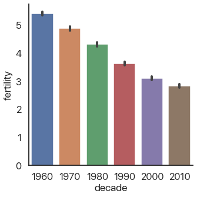
As you can see, fertility rates have declined for the past 50 years. The black bars show a confidence interval created by randomly selecting subsets of the data and seeing how big of a change occurs: they’re a very useful way of making sure you aren’t drawing conclusions from random noise.
Color choice in data visualization is one of my favorite subjects, and I’m only avoiding talking
more about it now because I know I won’t stop and I’m sure you have better things to do with your
time right now. Stay tuned in the future for a post where I’ll really dig deep and explain how to
use color effectively. For now, just stick with the defaults if you’re not sure what to do: they’re
really good. Most visuals on this blog use plasma if you want to copy that.
It’s autumn in Boston as I write this, and there’s beautiful fall color. Because of that, I’ll
switch out the color palette I’m using to reflect that color scheme. We can do that by adding
another argument to catplot:
sns.catplot(
data=data,
x='decade',
y='fertility',
kind='bar',
palette='autumn',
)
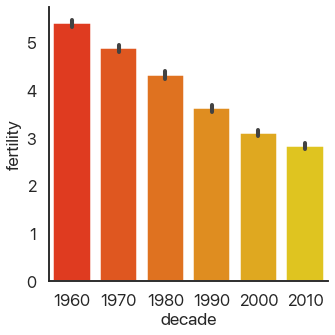
This is far from the only customization you can make: there are a truly ridiculous amount of arguments you can use. Consult the documentation for more in-depth coverage of those: we’ll stick with the important ones here.
OK, back to the different plots. Bar plots, despite their ubiquity, don’t show very much
information, and because they take up a lot of space they’re not my first choice. seaborn allows us
to instantly switch this out for a more informative version, the box plot:
sns.catplot(
data=data,
x='decade',
y='fertility',
kind='box',
palette='autumn',
)
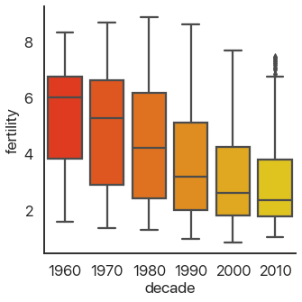
This should be familiar if you’ve ever taken a statistics class: it shows the quartiles of the data. We can extend this to the deciles of the data and get more boxes in the enhanced boxplot or boxenplot:
sns.catplot(
data=data,
x='decade',
y='fertility',
kind='boxen',
palette='autumn',
)
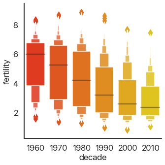
Taking this concept to its logical conclusions, we get the continuous violin plot:
sns.catplot(
data=data,
x='decade',
y='fertility',
kind='violin',
palette='autumn',
)
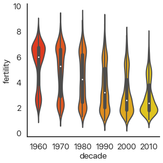
There’s a problem: this is hard to look at because it’s squished horizontally. The aspect argument
of catplot changes the width/height ratio: by setting it to 2, we can widen our plot:
sns.catplot(
data=data,
x='decade',
y='fertility',
kind='violin',
palette='autumn',
aspect=2
)
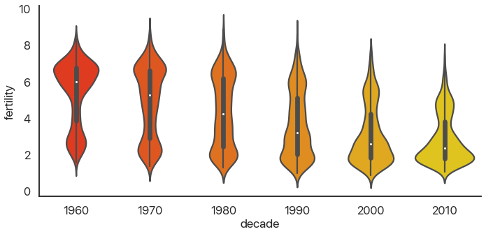
Much better! We can see something interesting from this that wasn’t apparent from the barplot: in the 60’s, the data was skewed: there were a few countries with small birthrates and a lot of countries with larger birthrates. Now, the reverse is true: most of the world has low birthrates, and a few countries have high birthrates.
Another approach to making barplots better, instead of showing more information, is to just use less visual space. This gives us the final summary plot, the point plot:
sns.catplot(
data=data,
x='decade',
y='fertility',
kind='point',
palette='autumn',
)
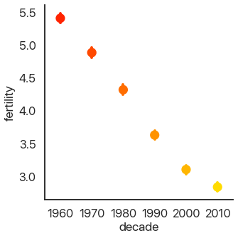
It’s hard to see, but we have confidence intervals just like last time, and the mean of the data. This allows us to show more points and follow trends more easily.
Another type of plot in seaborn shows all of the data points. This type of plot is ineffective for
large datasets, but it works well for small ones. To show that, I’ll take every hundredth data point
and use those for the next plots. First, the swarmplot, which tries to group points together without
overlapping them:
sns.catplot(
data=data.loc[::100],
x='decade',
y='fertility',
kind='swarm',
palette='autumn',
)
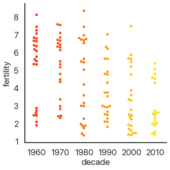
Another approach is to avoid moving the y-values of points and spread them out on the x-axis. This is called a strip plot:
sns.catplot(
data=data.loc[::100],
x='decade',
y='fertility',
kind='strip',
palette='autumn',
)
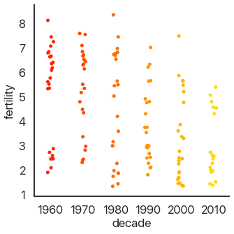
The last type of plot, somewhat of an anomaly, is the count plot: this just counts the number of observations. This only uses one categorical variable:
sns.catplot(
data=data.loc,
x='decade',
# no y for these plots
kind='count',
palette='autumn',
)
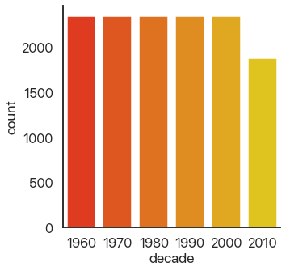
We can see that we have a lot of data! Think about how much data each of these plots capture: a violin plot like the one above allows you to easily spot a trend in literally thousands of data points at a glance. This is what I mean by effective dataviz: using visuals as a tool, not just as an art project.
Advanced Data Manipulation: Birth Rate Spikes
OK, now we’re moving on from categorical plots. Let’s remove the decade field because we won’t need
it any more:
data.drop(columns=['decade'], inplace=True)
There are lot of ways we could look at this data and try to learn something about it. I’m going to pick a question which will allow us to show off some pretty slick data rearrangement and ramp up the complexity a little without going overboard. Specifically, what are the largest shifts from one year to the next in the birth rate of a single country? Most birth rates by country are fairly stable and smoothly go up or down, but there are some outliers.
How would we go about answering this? Long form isn’t very useful for answering this question, so
let’s pivot back to wide form by using df.pivot():

Pivoting a DataFrame means swinging a column up into the column list or swinging the columns list down into a row. It’s not hard to use: just pick your index, columns, and data variables. (This works best with long-form data because all of these need to be columns.)
First a refresher on how our data looks now:
data.head()
| country | year | fertility | |
|---|---|---|---|
| 0 | Afghanistan | 1960 | 7.450 |
| 1 | Albania | 1960 | 6.489 |
| 2 | Algeria | 1960 | 7.524 |
| 3 | Angola | 1960 | 6.708 |
| 4 | Antigua and Barbuda | 1960 | 4.425 |
Now let’s pivot!
pivoted = data.pivot(
columns='year',
index='country',
values='fertility'
)
pivoted.head()[1960:1965]
| year | 1960 | 1961 | 1962 | 1963 | 1964 |
|---|---|---|---|---|---|
| country | |||||
| Afghanistan | 7.450 | 7.450 | 7.450 | 7.450 | 7.450 |
| Albania | 6.489 | 6.401 | 6.282 | 6.133 | 5.960 |
| Algeria | 7.524 | 7.573 | 7.614 | 7.646 | 7.665 |
| Angola | 6.708 | 6.790 | 6.872 | 6.954 | 7.036 |
| Antigua and Barbuda | 4.425 | 4.386 | 4.344 | 4.299 | 4.250 |
There is more than one way to do this operation: feel free to explore alternatives. Now I want the
differences between consecutive years. We’re in luck, because there’s a function that does that for
us: df.diff(). It takes in the axis we want to use for the differences. Note that taking differences
decreases the number of points we have by 1 in each row: we can’t get the difference between 1960
and 1959 because we don’t have 1959 data. We solve this by dropping the 1960 column:
# axis=0 would be columns
diffs = pivoted.diff(axis=1).drop(columns=[1960])
diffs.head()[[1961, 1962, 1963, 1964, 1965]]
| year | 1961 | 1962 | 1963 | 1964 | 1965 |
|---|---|---|---|---|---|
| country | |||||
| Afghanistan | 0.000 | 0.000 | 0.000 | 0.000 | 0.000 |
| Albania | -0.088 | -0.119 | -0.149 | -0.173 | -0.187 |
| Algeria | 0.049 | 0.041 | 0.032 | 0.019 | 0.010 |
| Angola | 0.082 | 0.082 | 0.082 | 0.082 | 0.080 |
| Antigua and Barbuda | -0.039 | -0.042 | -0.045 | -0.049 | -0.057 |
distplot is more general than the other function’s we’ve been using: it’ll accept basically any 1D
list of data.
I’m interested in the distribution of this data: particularly, whether there are outliers. seaborn
has a very useful function called distplot that can visualize distributions of data. It can do
histograms, kernel density estimates, fit statistical distributions, and more. In general, this is a
great way to visually check for outliers or abnormalities that might warrant further investigation
in all sorts of datasets.
Because we have 2D data we need to flatten it first. Because we only care about the raw numbers we
can do this by getting the values as a matrix and then calling .flatten():
flat = diffs.values.flatten()
sns.distplot(flat)
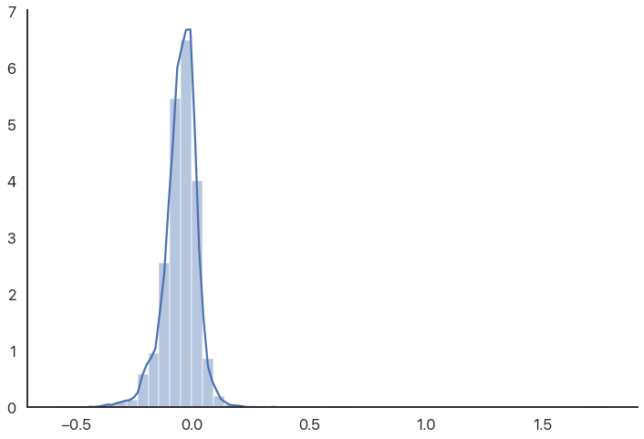
The reason the graph is off-center is because there are some high outliers that aren’t really visible because there are so many other data points. We can use a rugplot (a bar for every value) to show these outliers more directly:
sns.distplot(flat, rug=True)
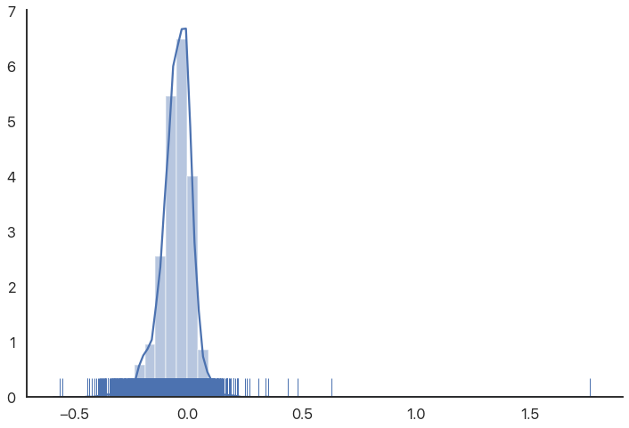
As we can see, there are some very extreme outliers in this data. You might expect birth rates to be normally distributed or “nice”, so this is somewhat of a shock. (These are not data errors, if you’re wondering: they’re as good as the rest of the numbers.)
What’s the story here? Which countries and years have such anomalous data? Let’s explore.
Selecting Countries With Outlier Data
In many programs, doing something like this—selecting rows that match a fairly complicated criterion—would be a fairly difficult task. Not so in Python: the tools we already have can combine to do this without too much trouble.
As you get more experience, you’ll become more comfortable with chaining together DataFrame operations. For now, though, we’ll take it step by step. Our goal is to sort the list of countries by the highest single-year difference (positive or negative) in birth rate.
We’ll first take the diffs and get their absolute value. We’ll then take the maximum by row:
max_diffs = diffs.abs().max(axis=1)
max_diffs.head()
country
Afghanistan 0.208
Albania 0.192
Algeria 0.261
Angola 0.090
Antigua and Barbuda 0.212
dtype: float64
Now we want to sort this data. This is a cornerstone of a lot of common operations on data, so it’s
a good thing that we’re doing it now. The function that does this is called df.sort_values(), and it
takes in a column or list of columns to sort by and a couple other optional arguments. Because we
only have one column, all we need to do is tell Python to sort in descending order:
max_diffs.sort_values(ascending=False, inplace=True)
max_diffs.head()
country
Romania 1.760
Malta 0.630
Japan 0.559
Singapore 0.550
Virgin Islands (U.S.) 0.480
dtype: float64
We now have the countries ordered by their maximum difference. Now all we need to do is use the index of this series to index our original data, and we’ll have all of the birth rates by year for each country we care about.
I’m going to use the 12 most unusual countries, mainly because when you’re making plots you can break 12 up in lots of ways. You can easily replace this and see what changes. Let’s get the data we want:
high_diff_countries = max_diffs.index[:12]
high_diff_diffs = diffs.loc[high_diff_countries]
We use .loc because otherwise pandas thinks we’re indexing columns.
Now we need to do the same thing with our original dataset. One difference is that we want to query
based on a column (country), not the index. We can do that using Boolean indexing like this:
# HDC: High-Diff Country
hdcs = data[data['country'].isin(high_diff_countries)]
The isin method allows us to create a Boolean index and use that. See how individually our tools are
pretty simple but they combine really effectively? Python data analysis can almost feel like a
puzzle sometimes: you have a certain set list of things you can do and you have to combine them in
interesting ways.
There’s actually a slicker way of doing this that I didn’t know about until recently: the df.query
method. query takes a string, where column names can be written out as they are and local variables
need to be prefixed with @. This allows us to use simpler expressions and make our code more
readable. Here’s the alternative version of the above code:
hdcs = data.query('country in @high_diff_countries')
Pretty neat, huh?
Bringing the Heat
One interesting version of a heatmap is a clustermap: a heatmap that groups columns so similar rows
are visually together. This can be combined with df.corr(), which produces pairwise correlations of
numerical data, to very quickly search for patterns in large multidimensional datasets. You can
consult its documentation if you’re interested.
I want to show a type of visualization we haven’t used yet: the heatmap. Heatmaps can be extremely
useful in all sorts of different ways, and they’re oddly hard to do with a lot of data analysis
software. Python has no such problems: sns.heatmap has us covered. Heatmaps, like distribution
plots, are pretty flexible as far as data.
One wrinkle is that the default choice for the colormap isn’t very useful—in particular, it’s often
nice to center the colormap at 0, and it’s often nice to use robust=True to avoid having single
outliers mess with your colors. We want to see the outliers, so we won’t be doing this, but we will
set the center to 0 so our visuals aren’t misleading.
# Read the cmap as "red->blue reversed"
# this makes high values "hot" and low values "cold"
sns.heatmap(high_diff_diffs, center=0, cmap="RdBu_r")
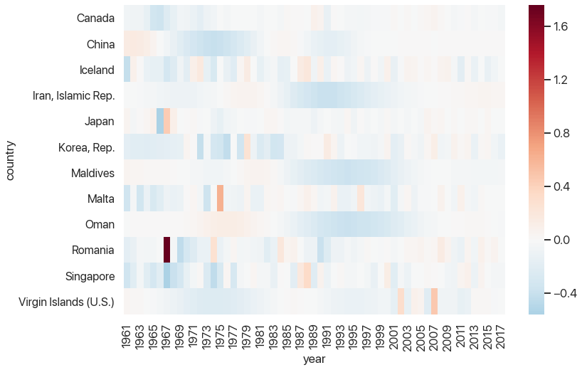
This is starting to look pretty helpful: we can see that there tends to be a rebound after large outliers, but some rebounds are closer to the outlier than others. We can also see which outliers were part of larger trends and which ones stick out. And, of course, we can see that Romania’s 1967 fertility rate was 1.7 births per woman higher than the one a year prior, which is strange to say the least.
Our last task (yes, this will be over soon!) will be to graph the birth rates as a time series for each of these countries. This will use the most complex but also the most powerful tool Seaborn has for visualization: facet grids.
Looking Like Andy Warhol
Andy Warhol, Marilyn Diptych. 1962, Tate Gallery.

Figure 3: Our muse for the next plot.
The goal of the facet plot is to show additional dimensions to data by making many different subplots with different subsets of the data and arranging them in a grid. This is a very effective visualization technique for large, multidimensional datasets, because humans are really good at picking up on small differences between datasets as long as they’re visually small enough to compare. Small multiples, as this is called, are criminally underused: interactive animations where you select data makes it hard to compare between different choices because you can’t see them on the screen at the same time, and adding too many dimensions or data points on one plot visually clutters it, as you can see below:
Picture credit to Conseil Général de L’environnement Et du Developpement Durable.
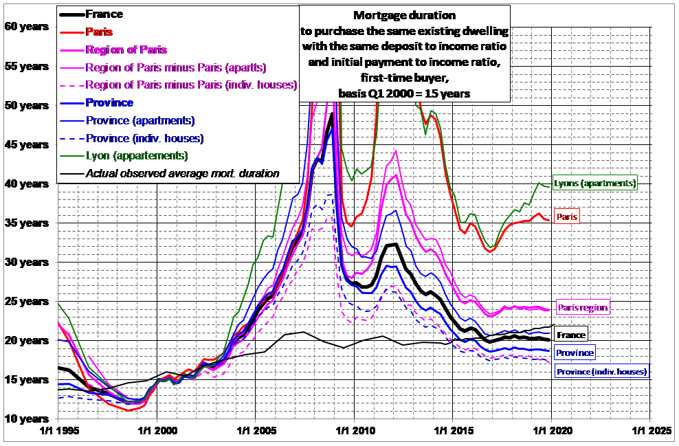
That’s…a bit much. There’s also a ton of going back and forth from the legend, which makes it really hard to compare anything. (“Hang on, what was blue dashes again?”) We’ll see how small multiples can make it much easier to read in a lot of information at once.
To show you how these facet grids work before we finish with our final plot, let’s go back to the
categorical data. Let’s show the birth rates of different areas of the world by decade, first or
second half-decade, and area. As it turns out, catplot had the ability to do this the whole time!
All we needed to do was pass in row and/or col. (Again, this is where you really admire the API for
these libraries: we can generate insanely complicated graphs in a single function call and it’s
pretty intuitive.)
world_areas = [
'North America',
'Sub-Saharan Africa',
'South Asia',
'Middle East & North Africa',
'Latin America & Carribbean'
]
data = data.query('country in @world_areas')
data['decade'] = (np.floor(data['year'] / 10) * 10).astype(int)
# don't worry about this code
data['half'] = ["'00-'04"
if (x % 10) < 5
else "'05-'09"
for x in data['year']
]
I won’t be explaining these arguments here. The only point is just to have some data to do a facet plot with. Consult the documentation if you’re interested.
sns.catplot(
data=data,
x='half',
y='fertility',
row='country',
col='decade',
palette='viridis',
kind='bar',
hue='decade',
dodge=False,
ci=None,
aspect=1,
height=6,
)
You might want to open this image in a new tab: it’s a bit hard to read the text when condensed to fit the website’s layout.
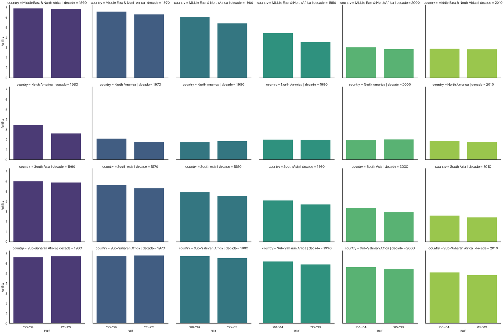
Disclaimer: this is not a plot I think is effective. It’s purely as a demonstration of the approach. Take a second to see what’s going on.
- The column indicates the decade, so the whole chart progresses forward in time.
- The x-axis indicates the half-decade, so each subplot is also oriented in time.
- The hue indicates the decade again. We could make hue a different categorical data to add one more
dimension to this plot, but I didn’t have another one to add. This is why I added
dodge=False: normally, when the hue changes, it will plot the different bars beside each other, but in this case each subplot only has one type of decade so I’m not doing that. - The y-axis indicates the fertility rate.
- The rows indicates the area of the world.
All in all, this (admittedly convoluted) plot shows four different dimensions to our data! This is
three categorical variables and one continuous variable. We could have even extended this further
and shown five by adding a different hue, but at that point in cases like this the graph would
probably be even more unreadable than it is now.
The Finale
OK, now we’re finally ready to do the last plot. We’re going to be graphing a continuous variable
against a continuous variable, so instead of catplot we’re using relplot. There are fewer kinds of
relational plot: you can do a scatterplot, a regression line and a scatterplot, and a lineplot where
you connect each dot. This last one is what we’re doing. Other than that, it works almost
identically to catplot in terms of the arguments it takes. Here we go!
sns.relplot(
data=hdcs,
x='year',
y='fertility',
col='country',
col_wrap=4,
hue='country',
palette='plasma',
kind='line',
col_order=high_diff_countries,
hue_order=high_diff_countries,
legend=False
)
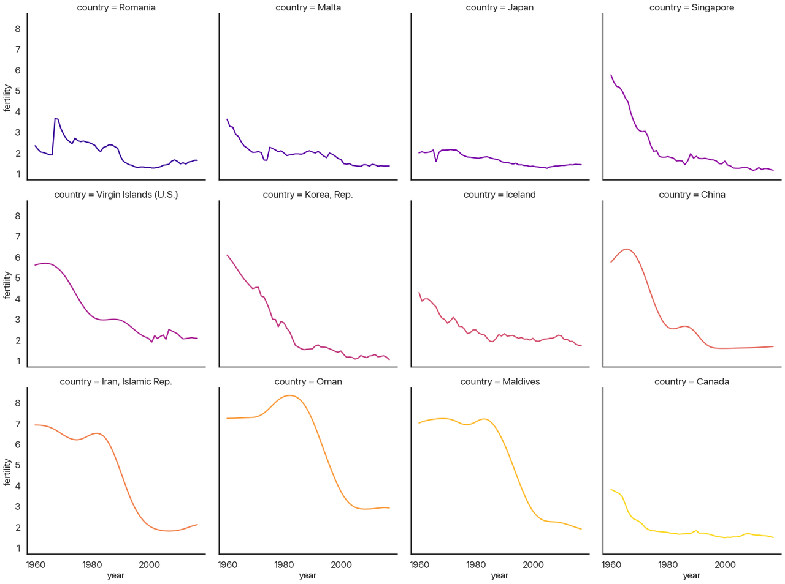
First, let’s go over the new parameters I used in turn:
-
col_wrapallows the columns to wrap and make new rows if you aren’t using therowvariable. Here I make it so each row has 4 plots. -
hueis the same ascol, just like our last example. Lineplots don’t have the same “dodging” behavior that barplots do, so I don’t need to add anything else to make it work. This could be another categorical variable if I had one to show. - The kind of plot is a lineplot, as I mentioned above (as opposed to
'scatter'or'reg'.) - I turn the legend off because it’s redundant: the titles of each subplot tell you the country.
-
col_orderandhue_ordercontrol how the plot is ordered. It defaults to whichever categories it sees first, which would be alphabetical here. That isn’t very useful, so I switched it to order by the maximum diff instead.
Let’s recap what we’ve accomplished (a lot: nice job!). We got our data with lots of missing values and in an inconvenient format, directly off the Internet. We then cleaned up that data until it was spotless and in the format we wanted. After that, we could make a bunch of summary visuals that helped us see the distribution of the data and the rough trends. We then selected a very specific subset of that data for further analysis after quickly searching for interesting outliers. Finally, we used the information we learned to efficiently display an interesting subset of the data, allowing us to draw interesting conclusions in a way that we simply couldn’t do by looking at tables or statistics.
In something like an introductory statistics class you often work with a couple dozen data points at a time. The dataset I chose for this tutorial has 13,630 data points: well outside the range lots of tools stop working or become cumbersome. The code required to generate this last plot barely hits 10 lines! (What can you do in 10 lines of Java?)
This kind of exploratory data analysis—visualizing the data, finding something worth analyzing, filtering down, and repeating—is extremely effective, and learning how to use these tools to perform this task will make you significantly better at all sorts of disciplines.
With that said: what can we actually learn from this plot?
Epilogue: What Have We Learned?
Before I say anything more: look at the plot again and try to make some inferences yourself. What questions does this answer, and what questions does this data prompt? Are there things you’d like to know that would be clearer in a different visualization? (Are there things that pie charts are bad at that are easy with visuals like these?) Take a minute: I’ll wait.
OK, done? I’m sure you could say a lot more than what I’m going to, but these are the questions I ask and the answers I see when I look at this data:
- China, Iran, Oman, the Maldives, South Korea, the Virgin Islands, Singapore, and Canada (perhaps also Iceland) all look very similar. I would guess that going further back for countries like Canada would increase the similarity further.
- That leaves Romania, Malta, and Japan, coincidentally the countries with the largest one-year changes. Malta’s and Japan’s are both downward spikes followed by a sharp upward rebound, but Romania is a bit different: it has a sharp upward spike followed by a slow downward rebound.
- My questions: why is this downward curve so prevalent? What’s special about Romania, Malta, and Japan? It seems unlikely to be statistical noise: the distribution plot we had earlier made it pretty clear that these are very extreme outliers.
Food for thought: are there any common statistical techniques (at least, the kind you’d do when you’re exploring for interesting stuff without knowing exactly what that’ll be) that would pick up on the larger trends like this visual allows?
You may have good answers to these questions, and you may see interesting patterns that I’m missing. We can reflect about how different visualizations would allow for different forms of understanding the data. This type of plot allows us to see some small details (like Japan’s spike, which would be invisible if all of the lines were on the same chart) and also the bigger picture (if you had stopped with the list of years with the biggest differences, you’d miss that most of those aren’t actually outliers: they’re part of a larger, very predictable trend.) Not many approaches combine the forest and the trees as effectively.
To close out, I’ll provide some context for the patterns we just pointed out and drive home just how much we can learn from just this one dataset:
- The downward curve pattern is called the demographic transition (Wikipedia link), and it’s one of the key markers of a nation becoming more developed: fewer births, fewer deaths, longer lifespans, better education, etc.
- We can recognize the impact of key historical events in these graphs: Korea developing very rapidly after the Korean War, China undergoing the Cultural Revolution and industrialization (death rates would perhaps provide a more complete picture of this chapter in the past, however), and Iran developing rapidly after the Iranian Revolution of 1979. Better historians than I am could probably tell you more, and by integrating other statistics like GDP per capita you could provide a much more holistic picture.
- The only countries with really unexpected outliers, not simply a year with rapid demographic transition, are the top three: Romania, Malta, and Japan.
- Romania’s spike is a sad chapter in history: Decree 770, which outlawed abortion and contraceptives except in rare cases, caused this pattern when it was made law in 1967. This caused an increase in child mortality, an enormous increase in maternal deaths, and large numbers of orphaned children who couldn’t be supported by their family. The slow downward return was due to increased circumvention and evasion of the Communist Party’s control over abortion and contraceptives. It has been argued that this decree contributed to the boom generation it created—many of whom grew up knowing they were unplanned—spearheading the violent overthrow and killing of Ceausescu after the end of the Cold War.
- Unsatisfyingly, Malta remains a puzzle to me. I honestly have no idea why the birth rate went up by .63 births per woman from 1974 to 1975, or why it went down before that. There were some political goings-on, but I don’t know enough about Malta to make any causal claim. If you know more about this than I do let me know!
- Japan’s spike, on the other hand has a very interesting explanation. 1966 was a “year of the fire horse” (hinoe uma), which in the Chinese zodiac is believed to mean that daughters born then would be overly headstrong and fierce. This led to a large spike in contraceptive use and abortions that lasted until the year was over.
Thanks for Reading!
That was a lot: if you made it here, you’re officially introduced to Python data analysis! If you want to see more examples of Python data science in action, feel free to browse the rest of this blog. If you have any questions or have anything to correct, let me know!